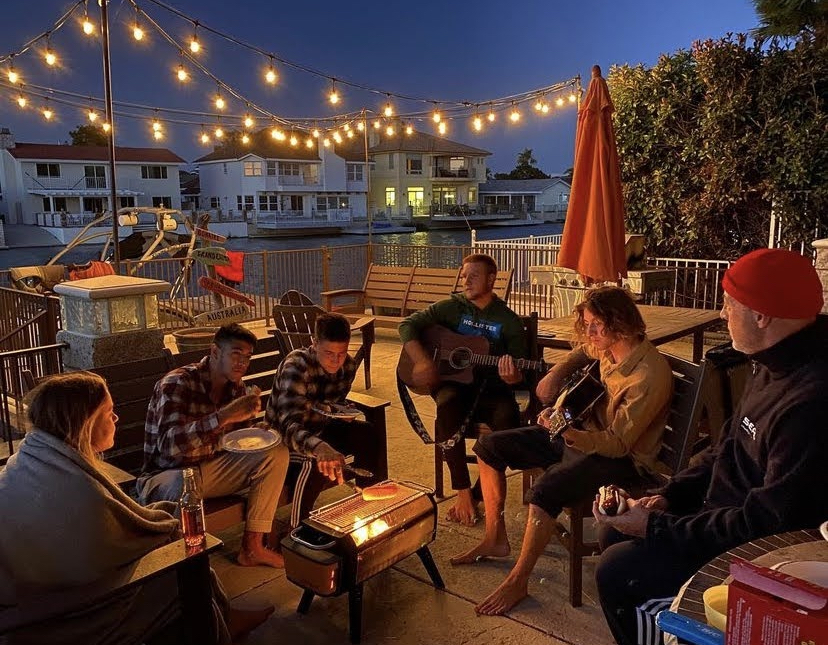
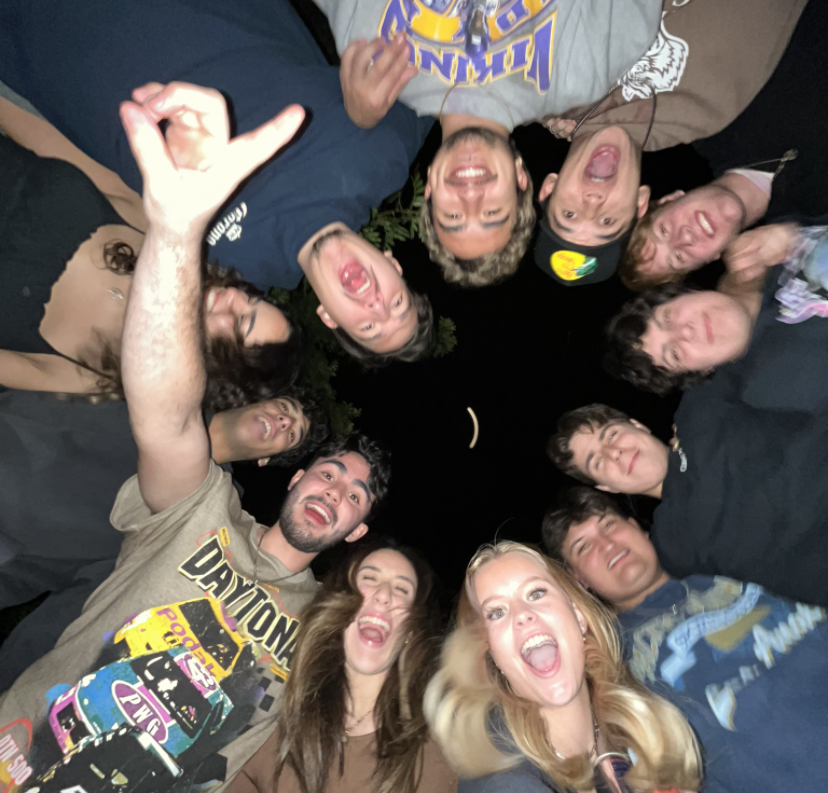
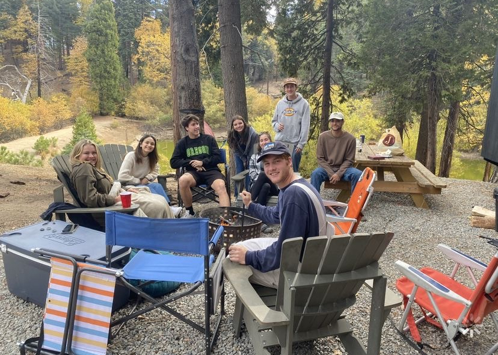

About Me



Hello! I'm Wyatt Bodle, a Software Engineer and Computer Science student with a passion for technology, programming, and a strong commitment to excellence in software development. Originally from Victorville, California, I've always been curious about how things work, which eventually led me to a deep fascination with technology and software development.
My journey into this field began during the challenging times of the Covid-19 pandemic, when I dedicated myself to learning Swift iOS development. Through self-guided learning and the vast resources available online, I gained valuable experience in software development, igniting my passion for a career in computer science and engineering.
My dedication to learning and problem-solving is reflected in my academic achievements — a Bachelor's degree in Computer Science from California Baptist University with a 3.75 GPA, and now an ongoing Master's in Computer Science, focused on Artificial Intelligence, at USC. Along the way I've built up versatility across Python, C++, Java, JavaScript, and more.
What sets me apart is my hands-on experience in teaching, leading, and mentoring. As a Programming Instructor at Coding Minds Academy, I imparted coding concepts and languages to diverse groups of students, adapting my teaching style to meet individual needs. As President of the Association for Computing Machinery (ACM) Club at CBU, I restructured the club around competition-based content and led our Competitive Programming team to the International Collegiate Programming Contest.
Today, I work as a Software Engineer building software, internal automations, and full technology systems end to end — and I keep the IT running along the way. I'm excited about the endless possibilities that lie ahead in software development, automation, and AI.